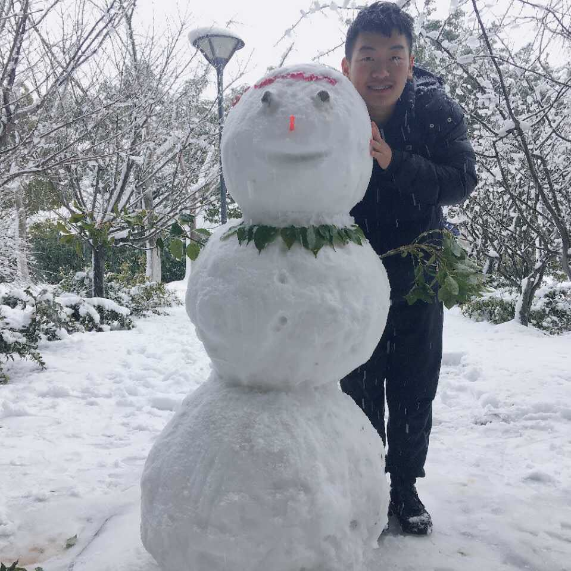
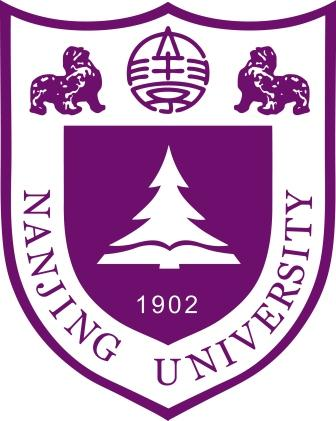
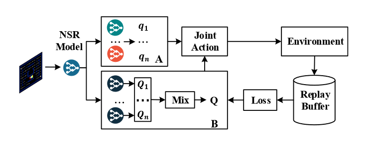
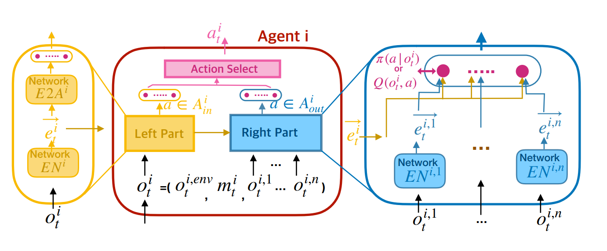
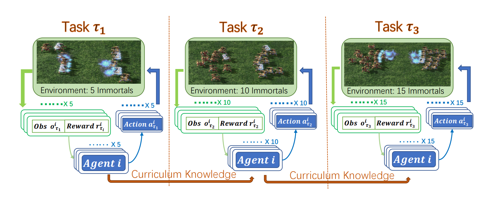
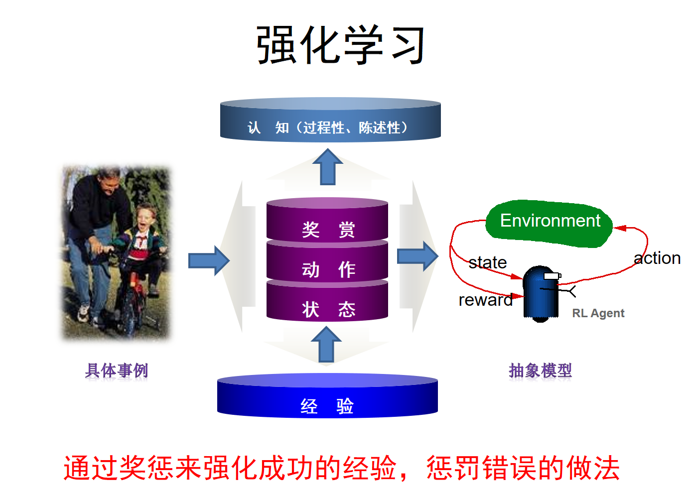

Yong Liu @ R&L, NJU-CS
|  | 刘勇 Yong Liu (Y. Liu) MSc R&L Group Department of Computer Science & Technology Nanjing University, Nanjing 210023, China. Email: lucasliunju [at] gmail.com |
 |
Latest News
One paper is accepted by ICLR 2020.
Two papers are accepted by AAAI 2020.
One paper with Weixun Wang, Tianpei Yang, Jianye Hao, Yujing Hu, Yingfeng Chen, Changjie Fan and Yang Gao is preprint in arXiv.
One paper with Weixun Wang, Tianpei Yang, Jianye Hao, Yujing Hu, Yingfeng Chen, Changjie Fan and Yang Gao is preprint in arXiv.
One paper with Shaokang Dong, Jiarui Chen, Tianyi Bao and Yang Gao is accepted by ZTE Communications.
One paper with Weixun Wang, Tianpei Yang, Jianye Hao, Yujing Hu, Yingfeng Chen, Changjie Fan and Yang Gao is preprint in arXiv.
One paper with Yujing Hu, Yang Gao, Yingfeng Chen and Changjie Fan is accepted by IJCAI 2019.
From Dec 1, 2018, Yong is visiting Dr. Yujing Hu's group in Netease Fuxi AI Lab.
Short Bio
Yong received his B.Sc. degree from China Agricultural University, China in June 2017.
After that, he became an M.Sc. student in the R&L Group led by professor Yang Gao in Nanjing University.
Yong focuses on simplification of learning process in multi-agent systems, i.e., game abstraction.
The large number of agents and complex game relationship cause great difficulty for policy learning. Therefore, simplifying the learning process is an important research issue.Yong focuses on the algorithm framework of reinforcement learning and applications, especially in multi-agent systems. Reinforcement learning learn the policy through the feedback from environment, which is a way closer to the human model. I'm really interested in it.
Yong focuses on the transfer learning in multi-agent systems, especially between environments with different number of agents. Policy learning is difficult in large-scale multi-agent systems. We use incremental learning and teansfer learning to solve the problem.
Yong Liu, Yujing Hu, Yang Gao, Yingfeng Chen, Changjie Fan. Value Function Transfer for Deep Multi-Agent Reinforcement Learning Based on N-Step Returns. In: Proceedings of the 28th International Joint Conference on Artificial Intelligence (IJCAI'19), Macau, China, 2019. [Paper]
Yong Liu, Weixun Wang, Yujing Hu, Jianye Hao, Xingguo Chen, Yang Gao. Multi-Agent Game Abstraction via Graph Attention Neural Network. IIn: Proceedings of the 34th AAAI Conference on Artificial Intelligence (AAAI'20), New York, USA, 2020. [Paper]
Weixun wang, Tianpei Yang, Yong Liu, Jianye Hao, Xiaotian Hao, Yujing Hu, Yingfeng Chen, Changjie Fan, Yang Gao. Action Semantics Network: Considering the Effects of Actions in Multiagent Systems. In: International Conference on Learning Representations (ICLR'20), Addis Ababa, Ethiopia, 2020. [Paper]
Weixun wang, Tianpei Yang, Yong Liu, Jianye Hao, Xiaotian Hao, Yujing Hu, Yingfeng Chen, Changjie Fan, Yang Gao. From Few to More: Large-scale Dynamic Multiagent Curriculum Learning. In: Proceedings of the 34th AAAI Conference on Artificial Intelligence (AAAI'20), New York, USA, 2020. [Paper]
Shaokang Dong, Jiarui Chen, Yong Liu, Tianyi Bao, Yang Gao. Reinforcement Learning from Algorithm Model to Industry Innovation: A Foundation Stone of Future Artificial Intelligence. ZTE Communications (accepted)
Yong Liu, Weixun Wang, Yujing Hu, Yang Gao, Jianye Hao. Multi-Agent Game Abstraction Based on Graph Neural Network. submitted to AAAI 2020.
Yinghuan Shi, Tiexin Qin, Yong Liu, Jiwen Lu, Yang Gao. Data Augmentation for Small-Scale Data by Learning the Deterministic Policy. submitted to AAAI 2020.
Zemian Ke, Pan Liu, Yong Liu, Zhibin Li. A Double Deep Q Network-based Variable Speed Limit Control to Reduce Travel Time at Freeway Bottlenecks. submitted to Transportation Research Record.
Excellent Master Thesis in NJU CS (top 2%), 2020
National Scholarship (top 2%), 2019
Beijing Excellent Graduates (top 2%), 2017
National Scholarship (top 2%), 2016
Interdisciplinary Contest In Modeling (ICM), Honorable Mention, 2016
Beijing University Physics Experiment Competition, Third Award, 2014
Main Research Interests
Multi-Agent Systems
Reinforcement Learning
Transfer Learning
Publications
|  | A novel MDP similarity measure and transfer single-agent knowledge to multi-agent environments. |
 |
A novel Game Abstraction based on two-stage attention and graph neural network. |
|  | We propose a novel network architecture, named Action Semantics Network (ASN), that explicitly representssuch action semantics between agents. ASN characterizes different actions' influence on other agents using neural networks based on the action semantics between agents. |
|  | We propose three transfer mechanisms across curricula to accelerate the learning process. Moreover, due to the fact that the state dimension varies across curricula, and existing network structures cannot be applied in such a transfer setting. Therefore, we design a novel network structure called Dynamic Agent-number Network (DyAN). |
|  | We introduce the current research progress and application of reinforcement learning. |
Awards & Honors
Correspondence
Email: lucasliunju [at] gmail.com
Office: Room 924, Computer Science Building, Xianlin Campus of Nanjing University
Address: Yong Liu
National Key Laboratory for Novel Software Technology
Nanjing University, Xianlin Campus Mailbox 603
163 Xianlin Avenue, Qixia District, Nanjing 210046, China